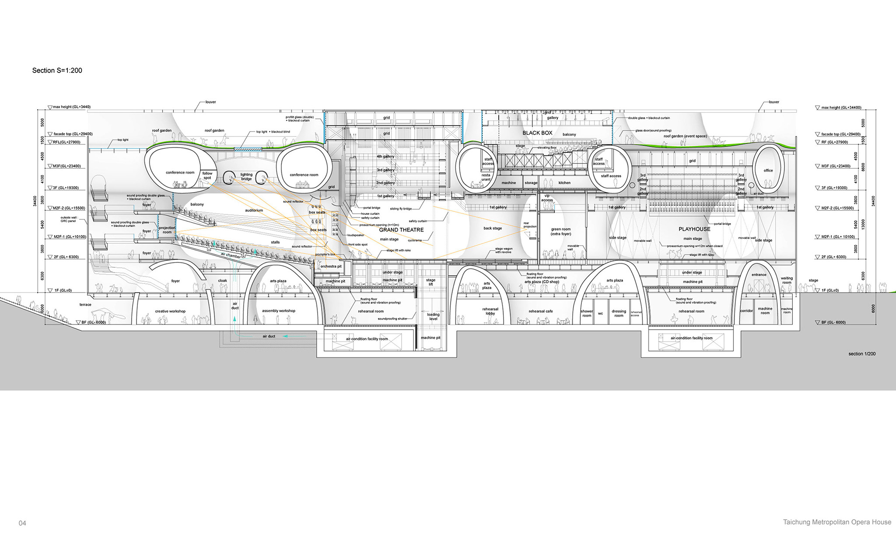
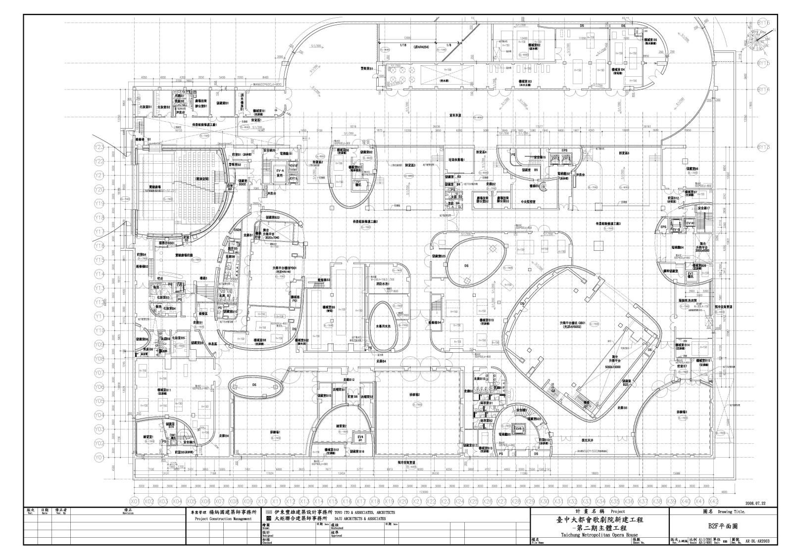
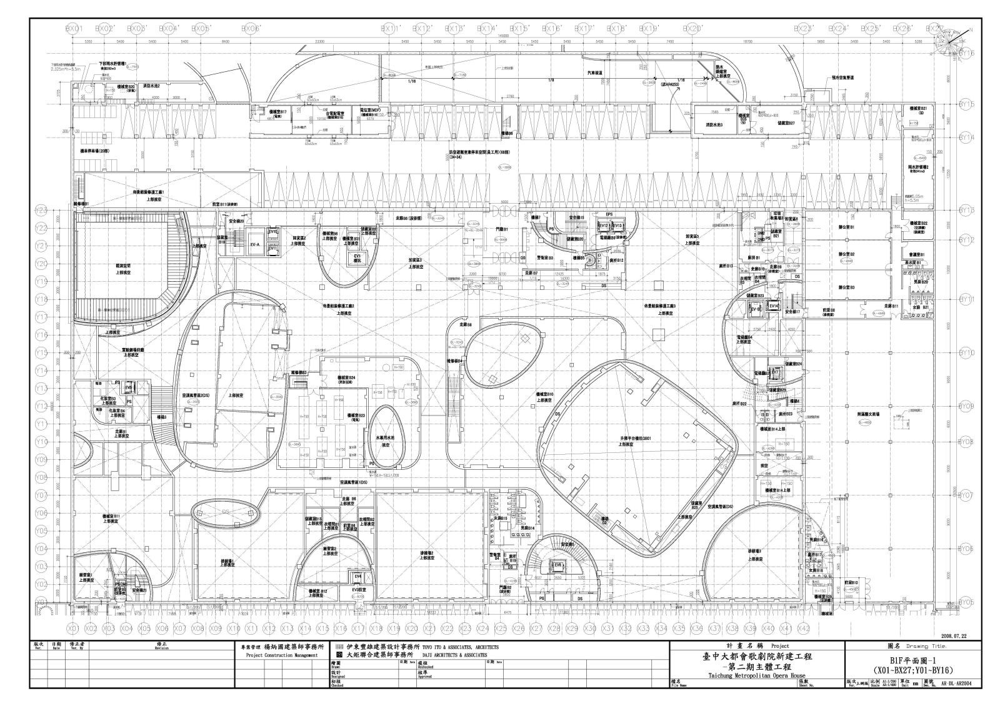
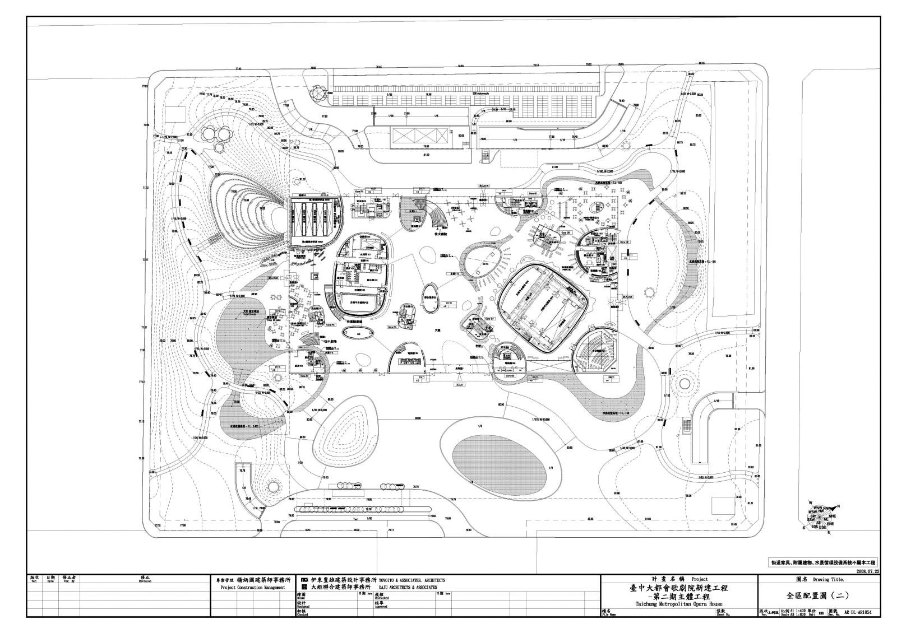
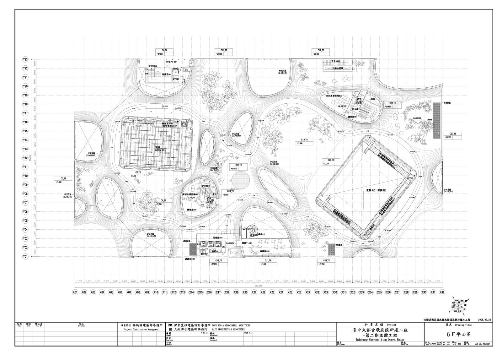

Театр Тайчжуна — все материалы
Чертежи, технические паспорта, планы этажей, разрезы, схемы, строительные публикации и конкурсные сведения для составления площадной программы.
В число файлов входят PDF, DWG, ZIP, изображения и сохранённые HTML-публикации. Фотографии строительства и схемы не названы архитектурными чертежами. Производные тексты и контрольные превью в этот счёт не включены.
С чего начать
Площадная программа
Восемь уровней, площади, гримёрные, мастерские и фойе. У каждого значения указан источник и характер площади.
Оригиналы NPAC
Выберите Grand Theater, Playhouse, Black Box или общественные зоны. В подборке есть планы, разрезы, оборудование, гримёрные и общие служебные помещения.
Общие чертежи
Architectural Record, Metalocus и JARA: планы этажей и разрезы. Инженерные материалы: Arup, IStructE, NTU и 地工技術.
Планы и разрезы: быстрый просмотр

NPAC National Taichung Theater · Источник


NPAC National Taichung Theater · Источник


NPAC National Taichung Theater · Источник


NPAC National Taichung Theater · Источник


NPAC National Taichung Theater · Источник


NPAC National Taichung Theater · Источник


Toyo Ito & Associates / Architectural Record · Источник

Toyo Ito & Associates / Architectural Record · Источник

Toyo Ito & Associates / Architectural Record · Источник

Toyo Ito & Associates / Architectural Record · Источник

Toyo Ito & Associates / Architectural Record · Источник

Toyo Ito & Associates / Architectural Record · Источник

Toyo Ito & Associates / Architectural Record · Источник

Toyo Ito & Associates / Architectural Record · Источник

Toyo Ito & Associates / Architectural Record · Источник

Toyo Ito & Associates / Architectural Record · Источник


Toyo Ito & Associates / DAJU; Metalocus · Источник


Toyo Ito & Associates / DAJU; Metalocus · Источник


Toyo Ito & Associates / DAJU; Metalocus · Источник


Toyo Ito & Associates / DAJU; Metalocus · Источник


Toyo Ito & Associates / DAJU; Metalocus · Источник
Каталог файлов
| Файл | Раздел | Формат | Источник и авторство |
|---|---|---|---|
| BB-AV視聽訊號迴路箱細部圖Audio Visual Circuit Box Detail Chart(20160511updated).DWG | Black Box | DWG 0,24 МБ | National Taichung Theater / NPAC Оригинальный источник |
| BB-AV視聽訊號迴路箱細部圖Audio Visual Circuit Box Detail Chart(20160511updated).PDF | Black Box | PDF 0,93 МБ | National Taichung Theater / NPAC Оригинальный источник |
| BB-AV視聽訊號迴路箱配置圖Audio Visual Circuit Box Dispose Chart(20160511updated).DWG | Black Box | DWG 0,31 МБ | National Taichung Theater / NPAC Оригинальный источник |
| BB-AV視聽訊號迴路箱配置圖Audio Visual Circuit Box Dispose Chart(20160511updated).PDF | Black Box | PDF 0,49 МБ | National Taichung Theater / NPAC Оригинальный источник |
| BB-AV視聽設備(20260428updated).PDF | Black Box | PDF 0,6 МБ | National Taichung Theater / NPAC Оригинальный источник |
| BB-D化妝室平面圖Dressing Room Plan(20160511updated).DWG | Black Box | DWG 0,58 МБ | National Taichung Theater / NPAC Оригинальный источник |
| BB-D化妝室平面圖Dressing Room Plan(20160511updated).PDF | Black Box | PDF 0,26 МБ | National Taichung Theater / NPAC Оригинальный источник |
| BB-LT燈光設備(20260731updated).PDF | Black Box | PDF 2,22 МБ | National Taichung Theater / NPAC Оригинальный источник |
| BB-LT燈光迴路配置圖Lighting Circuit Dispose Chart_20250522updated.DWG | Black Box | DWG 0,29 МБ | National Taichung Theater / NPAC Оригинальный источник |
| BB-LT燈光迴路配置圖Lighting Circuit Dispose Chart_20250522updated.PDF | Black Box | PDF 0,77 МБ | National Taichung Theater / NPAC Оригинальный источник |
| BB-ST舞台剖面圖Stage Section.DWG | Black Box | DWG 4,11 МБ | National Taichung Theater / NPAC Оригинальный источник |
| BB-ST舞台剖面圖Stage Section.PDF | Black Box | PDF 0,5 МБ | National Taichung Theater / NPAC Оригинальный источник |
| BB-ST舞台吊具平面圖Stage Hanging Plot(20200505updated).PDF | Black Box | PDF 0,33 МБ | National Taichung Theater / NPAC Оригинальный источник |
| BB-ST舞台吊具平面圖Stage Hanging Plot.DWG | Black Box | DWG 0,19 МБ | National Taichung Theater / NPAC Оригинальный источник |
| BB-ST舞台平面圖Stage Floor Plan.DWG | Black Box | DWG 0,23 МБ | National Taichung Theater / NPAC Оригинальный источник |
| BB-ST舞台平面圖Stage Floor Plan.PDF | Black Box | PDF 0,41 МБ | National Taichung Theater / NPAC Оригинальный источник |
| BB-ST舞台設備(20230302updated).PDF | Black Box | PDF 0,54 МБ | National Taichung Theater / NPAC Оригинальный источник |
| BB-Technical Specifications and Outdoortheater(20260731updated).PDF | Black Box | PDF 1,95 МБ | National Taichung Theater / NPAC Оригинальный источник |
| BB-卸貨區平面圖Loading Area Plan(20180124updated).PDF | Black Box | PDF 0,3 МБ | National Taichung Theater / NPAC Оригинальный источник |
| BB-單面197席(20230417updated).PDF | Black Box | PDF 0,14 МБ | National Taichung Theater / NPAC Оригинальный источник |
| BB-單面式171席(20230417updated).PDF | Black Box | PDF 0,14 МБ | National Taichung Theater / NPAC Оригинальный источник |
| BB-單面式200席(20230417updated).PDF | Black Box | PDF 0,14 МБ | National Taichung Theater / NPAC Оригинальный источник |
| BB-單面式觀眾席位圖三款(20230417updated).DWG | Black Box | DWG 0,39 МБ | National Taichung Theater / NPAC Оригинальный источник |
| BB-後台設備(20260930updated).PDF | Black Box | PDF 0,32 МБ | National Taichung Theater / NPAC Оригинальный источник |
| BB卸貨區平面圖Loading Area Plane(20180124updated).DWG | Black Box | DWG 0,66 МБ | National Taichung Theater / NPAC Оригинальный источник |
| BB小劇場圖集Black Box_20250522updated).PDF | Black Box | PDF 3,86 МБ | National Taichung Theater / NPAC Оригинальный источник |
| BB技術手冊(20260930updated).PDF | Black Box | PDF 3,72 МБ | National Taichung Theater / NPAC Оригинальный источник |
| 小劇場座位圖-171席 | Black Box | PDF 0,14 МБ | National Taichung Theater / NPAC Оригинальный источник |
| 小劇場座位圖-197席 | Black Box | PDF 0,14 МБ | National Taichung Theater / NPAC Оригинальный источник |
| 小劇場座位圖-200席 | Black Box | PDF 0,14 МБ | National Taichung Theater / NPAC Оригинальный источник |
| GT-AV視聽訊號迴路箱細部圖 Audio Visual Circuit Box Detail Chart.DWG | Grand Theater | DWG 0,32 МБ | National Taichung Theater / NPAC Оригинальный источник |
| GT-AV視聽訊號迴路箱細部圖Audio Visual Circuit Box Detail Chart(20160511updated).PDF | Grand Theater | PDF 1,75 МБ | National Taichung Theater / NPAC Оригинальный источник |
| GT-AV視聽訊號迴路箱配置圖 Audio Visual Circuit Box Dispose Chart(20200609updated).DWG | Grand Theater | DWG 3,09 МБ | National Taichung Theater / NPAC Оригинальный источник |
| GT-AV視聽訊號迴路箱配置圖Audio Visual Circuit Box Dispose Chart(20200609updated).PDF | Grand Theater | PDF 2,49 МБ | National Taichung Theater / NPAC Оригинальный источник |
| GT-AV視聽設備(20260428updated).PDF | Grand Theater | PDF 0,49 МБ | National Taichung Theater / NPAC Оригинальный источник |
| GT-A觀眾席座位圖Seating Plan(20060210updated).PDF | Grand Theater | PDF 19,86 МБ | National Taichung Theater / NPAC Оригинальный источник |
| GT-A觀眾席座位圖Seating Plan(20260210updated).DWG | Grand Theater | DWG 3,54 МБ | National Taichung Theater / NPAC Оригинальный источник |
| GT-D化妝室平面圖 Dressing Room Plan(20200314updated).DWG | Grand Theater | DWG 2,26 МБ | National Taichung Theater / NPAC Оригинальный источник |
| GT-D化妝室平面圖Dressing Room Plan(20160511updated).PDF | Grand Theater | PDF 1,2 МБ | National Taichung Theater / NPAC Оригинальный источник |
| GT-LT燈光設備(20260731updated).PDF | Grand Theater | PDF 2,8 МБ | National Taichung Theater / NPAC Оригинальный источник |
| GT-LT燈光迴路配置圖Lighting Circuit Dispose Chart(20240412updated).PDF | Grand Theater | PDF 1,62 МБ | National Taichung Theater / NPAC Оригинальный источник |
| GT-LT燈光迴路配置圖Lighting Circuit Dispose Chart(20260428updated).DWG | Grand Theater | DWG 5,56 МБ | National Taichung Theater / NPAC Оригинальный источник |
| GT-LT貓道包廂燈具編碼配置F.O.H. Lighting & Lighting box Coding address number chart(20260428).PDF | Grand Theater | PDF 0,62 МБ | National Taichung Theater / NPAC Оригинальный источник |
| GT-ST舞台剖面圖 Stage Section(20220919updated).DWG | Grand Theater | DWG 1,5 МБ | National Taichung Theater / NPAC Оригинальный источник |
| GT-ST舞台剖面圖Stage Section(20220919updated).PDF | Grand Theater | PDF 0,5 МБ | National Taichung Theater / NPAC Оригинальный источник |
| GT-ST舞台吊具平面圖 Stage Hanging Plot(20220919updated).DWG | Grand Theater | DWG 0,79 МБ | National Taichung Theater / NPAC Оригинальный источник |
| GT-ST舞台吊具平面圖Stage Hanging Plot(20220919updated).PDF | Grand Theater | PDF 0,62 МБ | National Taichung Theater / NPAC Оригинальный источник |
| GT-ST舞台平面圖 Stage Plan(20220919updated).DWG | Grand Theater | DWG 1,46 МБ | National Taichung Theater / NPAC Оригинальный источник |
| GT-ST舞台平面圖Stage Floor Plan(20220919updated).PDF | Grand Theater | PDF 2,46 МБ | National Taichung Theater / NPAC Оригинальный источник |
| GT-ST舞台設備(20260731updated).PDF | Grand Theater | PDF 1,92 МБ | National Taichung Theater / NPAC Оригинальный источник |
| GT-Technical Specifications(20260731updated).PDF | Grand Theater | PDF 3,52 МБ | National Taichung Theater / NPAC Оригинальный источник |
| GT卸貨區平面圖 Loading Area Plan(20200609updated).DWG | Grand Theater | DWG 0,57 МБ | National Taichung Theater / NPAC Оригинальный источник |
| GT卸貨區平面圖Loading Area Plan(20200609updated).PDF | Grand Theater | PDF 0,56 МБ | National Taichung Theater / NPAC Оригинальный источник |
| GT大劇院圖集Grand Theater(20260428updated).PDF | Grand Theater | PDF 26,72 МБ | National Taichung Theater / NPAC Оригинальный источник |
| GT大劇院旋轉舞台規格說明.PDF | Grand Theater | PDF 0,53 МБ | National Taichung Theater / NPAC Оригинальный источник |
| GT大劇院木質舞蹈地板規格說明.PDF | Grand Theater | PDF 2,23 МБ | National Taichung Theater / NPAC Оригинальный источник |
| GT後台設備(20260930updated).PDF | Grand Theater | PDF 0,31 МБ | National Taichung Theater / NPAC Оригинальный источник |
| GT懸吊配置表(20260729updated).PDF | Grand Theater | PDF 0,17 МБ | National Taichung Theater / NPAC Оригинальный источник |
| GT技術手冊(20260930updated).PDF | Grand Theater | PDF 4,47 МБ | National Taichung Theater / NPAC Оригинальный источник |
| GT空白舞台_音樂會製圖用(20181017updated).PDF | Grand Theater | PDF 0,63 МБ | National Taichung Theater / NPAC Оригинальный источник |
| GT音響反射板各款圖面Acoustic Shell(20230715updated).PDF | Grand Theater | PDF 6,18 МБ | National Taichung Theater / NPAC Оригинальный источник |
| 大劇院座位圖 | Grand Theater | PDF 19,86 МБ | National Taichung Theater / NPAC Оригинальный источник |
| 場租收費表 | NPAC — прочее | PDF 0,35 МБ | National Taichung Theater / NPAC Оригинальный источник |
| 場租收費表 | NPAC — прочее | PDF 0,35 МБ | National Taichung Theater / NPAC Оригинальный источник |
| 場租收費表 | NPAC — прочее | PDF 0,35 МБ | National Taichung Theater / NPAC Оригинальный источник |
| 場租收費表 | NPAC — прочее | PDF 0,35 МБ | National Taichung Theater / NPAC Оригинальный источник |
| 場租收費表 | NPAC — прочее | PDF 0,35 МБ | National Taichung Theater / NPAC Оригинальный источник |
| 音響反射板各款圖面Acoustic Shell(20230715updated).ZIP | NPAC — прочее | ZIP 9,91 МБ | National Taichung Theater / NPAC Оригинальный источник |
| PH-07LT貓道包廂燈具編碼配置F.O.H. Lighting&Lighting box Coding address number chart(20260507).PDF | Playhouse | PDF 0,65 МБ | National Taichung Theater / NPAC Оригинальный источник |
| PH-AV視聽訊號迴路箱細部圖Audio Visual Circuit Box Detail Chart(20160511updated).PDF | Playhouse | PDF 1,38 МБ | National Taichung Theater / NPAC Оригинальный источник |
| PH-AV視聽訊號迴路箱細部圖Audio Visual Circuit Box Detail Chart(20160511updated).PDF | Playhouse | PDF 1,4 МБ | National Taichung Theater / NPAC Оригинальный источник |
| PH-AV視聽訊號迴路箱配置圖Audio Visual Circuit Box Dispose Chart(20200609updated).DWG | Playhouse | DWG 2,04 МБ | National Taichung Theater / NPAC Оригинальный источник |
| PH-AV視聽訊號迴路箱配置圖Audio Visual Circuit Box Dispose Chart(20200611updated).PDF | Playhouse | PDF 1,06 МБ | National Taichung Theater / NPAC Оригинальный источник |
| PH-AV視聽設備(20260428updated).PDF | Playhouse | PDF 0,68 МБ | National Taichung Theater / NPAC Оригинальный источник |
| PH-A中劇院觀眾席座位圖Seating Plan(20260210updated).PDF | Playhouse | PDF 7,81 МБ | National Taichung Theater / NPAC Оригинальный источник |
| PH-A觀眾席座位圖Seating Plan(20260210updated).DWG | Playhouse | DWG 1,48 МБ | National Taichung Theater / NPAC Оригинальный источник |
| PH-D化妝室平面圖Dressing Room Plan(20200611updated).DWG | Playhouse | DWG 5,89 МБ | National Taichung Theater / NPAC Оригинальный источник |
| PH-D化妝室平面圖Dressing Room Plan(20200611updated).PDF | Playhouse | PDF 1,42 МБ | National Taichung Theater / NPAC Оригинальный источник |
| PH-LT燈光設備(20260731updated).PDF | Playhouse | PDF 2,09 МБ | National Taichung Theater / NPAC Оригинальный источник |
| PH-LT燈光迴路配置圖(20260507updated).DWG | Playhouse | DWG 4,39 МБ | National Taichung Theater / NPAC Оригинальный источник |
| PH-LT燈光迴路配置圖Lighting Circuit Dispose Chart(20260507updated).PDF | Playhouse | PDF 1,4 МБ | National Taichung Theater / NPAC Оригинальный источник |
| PH-ST舞台剖面圖Stage Section(20210810updated).DWG | Playhouse | DWG 1,51 МБ | National Taichung Theater / NPAC Оригинальный источник |
| PH-ST舞台剖面圖Stage Section(20210810updated).PDF | Playhouse | PDF 0,73 МБ | National Taichung Theater / NPAC Оригинальный источник |
| PH-ST舞台吊具平面圖Stage Hanging Plot(20210810updated).DWG | Playhouse | DWG 0,72 МБ | National Taichung Theater / NPAC Оригинальный источник |
| PH-ST舞台吊具平面圖Stage Hanging Plot(20210810updated).PDF | Playhouse | PDF 0,52 МБ | National Taichung Theater / NPAC Оригинальный источник |
| PH-ST舞台平面圖Stage Floor Plan(20210810updated).DWG | Playhouse | DWG 2,66 МБ | National Taichung Theater / NPAC Оригинальный источник |
| PH-ST舞台平面圖Stage Floor Plan(20210810updated).PDF | Playhouse | PDF 3,69 МБ | National Taichung Theater / NPAC Оригинальный источник |
| PH-ST舞台設備(20230217updated).PDF | Playhouse | PDF 0,9 МБ | National Taichung Theater / NPAC Оригинальный источник |
| PH-Technical Specifications(20260731updated).PDF | Playhouse | PDF 2,58 МБ | National Taichung Theater / NPAC Оригинальный источник |
| PH-卸貨區平面圖Loading Area Plan(20200611updated).PDF | Playhouse | PDF 0,38 МБ | National Taichung Theater / NPAC Оригинальный источник |
| PH-後台設備(20260930updated).PDF | Playhouse | PDF 0,32 МБ | National Taichung Theater / NPAC Оригинальный источник |
| PH-懸吊配置表(20250522updated).PDF | Playhouse | PDF 0,22 МБ | National Taichung Theater / NPAC Оригинальный источник |
| PH-空白舞台平面圖_音樂類團隊套圖用(20210810updayted).PDF | Playhouse | PDF 1,16 МБ | National Taichung Theater / NPAC Оригинальный источник |
| PH中劇院圖集Playhouse(20260507updated).PDF | Playhouse | PDF 16,7 МБ | National Taichung Theater / NPAC Оригинальный источник |
| PH卸貨區平面圖Loading Area Plan(20200611updated).DWG | Playhouse | DWG 0,57 МБ | National Taichung Theater / NPAC Оригинальный источник |
| PH技術手冊(20260930updated).PDF | Playhouse | PDF 3,37 МБ | National Taichung Theater / NPAC Оригинальный источник |
| 中劇院座位圖 | Playhouse | PDF 7,8 МБ | National Taichung Theater / NPAC Оригинальный источник |
| 一樓大廳-使用範圍1F Foyer-Area.PDF | Холлы и общественные зоны | PDF 0,68 МБ | National Taichung Theater / NPAC Оригинальный источник |
| 二樓前廳-使用範圍2F Foyer-Area.PDF | Холлы и общественные зоны | PDF 2,74 МБ | National Taichung Theater / NPAC Оригинальный источник |
| 五樓展示廳(凸凸廰)-使用範圍Tutu-Area.PDF | Холлы и общественные зоны | PDF 3,55 МБ | National Taichung Theater / NPAC Оригинальный источник |
| 五樓展示廳(凸凸廰)馬達吊點位置示意圖Tutu Point Hoist System.PDF | Холлы и общественные зоны | PDF 0,11 МБ | National Taichung Theater / NPAC Оригинальный источник |
| 五樓展示廳(凸凸廳)剖圖面Tutu Section(20190408updated).DWG | Холлы и общественные зоны | DWG 1,65 МБ | National Taichung Theater / NPAC Оригинальный источник |
| 五樓展示廳(凸凸廳)剖圖面Tutu Section(20190408updated).PDF | Холлы и общественные зоны | PDF 0,08 МБ | National Taichung Theater / NPAC Оригинальный источник |
| 五樓展示廳(凸凸廳)平圖面-(20231009updated).PDF | Холлы и общественные зоны | PDF 0,52 МБ | National Taichung Theater / NPAC Оригинальный источник |
| 五樓展示廳(凸凸廳)平圖面Tutu floor Plan(20231009updated).DWG | Холлы и общественные зоны | DWG 1,53 МБ | National Taichung Theater / NPAC Оригинальный источник |
| 凸凸廰外接電力說明圖.DWG | Холлы и общественные зоны | DWG 28,52 МБ | National Taichung Theater / NPAC Оригинальный источник |
| 凸凸廰外接電力說明圖Power Supply(20231025updated).PDF | Холлы и общественные зоны | PDF 2,52 МБ | National Taichung Theater / NPAC Оригинальный источник |
| 前廣場電箱.PDF | Холлы и общественные зоны | PDF 0,85 МБ | National Taichung Theater / NPAC Оригинальный источник |
| 前廣場電箱（外接大電）.PDF | Холлы и общественные зоны | PDF 0,53 МБ | National Taichung Theater / NPAC Оригинальный источник |
| 廣場-使用範圍Outdoor Plaza-Area.PDF | Холлы и общественные зоны | PDF 0,42 МБ | National Taichung Theater / NPAC Оригинальный источник |
| 戶外劇場電箱.PDF | Холлы и общественные зоны | PDF 0,79 МБ | National Taichung Theater / NPAC Оригинальный источник |
| 空中花園-使用範圍Sky Garden-Area.PDF | Холлы и общественные зоны | PDF 1,26 МБ | National Taichung Theater / NPAC Оригинальный источник |
| 空中花園電箱.PDF | Холлы и общественные зоны | PDF 0,7 МБ | National Taichung Theater / NPAC Оригинальный источник |
| 角落沙龍-使用範圍Corner Salon-Area.PDF | Холлы и общественные зоны | PDF 0,44 МБ | National Taichung Theater / NPAC Оригинальный источник |
| 角落沙龍平面圖Corner Salon Floor Plan(20210917updated).PDF | Холлы и общественные зоны | PDF 0,29 МБ | National Taichung Theater / NPAC Оригинальный источник |
| 角落沙龍平面圖Corner Salon Floor Plan.DWG | Холлы и общественные зоны | DWG 1,46 МБ | National Taichung Theater / NPAC Оригинальный источник |
| 角落沙龍燈光基本配置圖Corner Salon Lighting Plan(20260507updated).PDF | Холлы и общественные зоны | PDF 0,18 МБ | National Taichung Theater / NPAC Оригинальный источник |
| 佈景工廠 繪景區 洗衣房 Floor Plan of Other Backstage Space(20160511updated).DWG | Общие служебные помещения | DWG 2,15 МБ | National Taichung Theater / NPAC Оригинальный источник |
| 共用空間圖集(20231230updated).PDF | Общие служебные помещения | PDF 1,85 МБ | National Taichung Theater / NPAC Оригинальный источник |
| 後台空間平面圖 Floor Plan of Other Backstage Space.PDF | Общие служебные помещения | PDF 0,41 МБ | National Taichung Theater / NPAC Оригинальный источник |
| 排練室1平面圖Rehearsal Room 1 Floor Plan(20231230updated).PDF | Общие служебные помещения | PDF 0,36 МБ | National Taichung Theater / NPAC Оригинальный источник |
| 排練室2平面圖Rehearsal Room 2 Floor Plan(20231230updated).PDF | Общие служебные помещения | PDF 0,35 МБ | National Taichung Theater / NPAC Оригинальный источник |
| 排練室3平面圖Rehearsal Room 3 Floor Plan(20231230updated).PDF | Общие служебные помещения | PDF 0,36 МБ | National Taichung Theater / NPAC Оригинальный источник |
| 排練室位置圖Floor Plan of All Rehearsal Rooms(20231230updated).PDF | Общие служебные помещения | PDF 0,46 МБ | National Taichung Theater / NPAC Оригинальный источник |
| 排練室平面圖 Rehearsal Rooms Floor Plan(20231230updated).DWG | Общие служебные помещения | DWG 0,91 МБ | National Taichung Theater / NPAC Оригинальный источник |
| npac-floor-guide.html | Архитектура и инженерия | HTML 0,09 МБ | NPAC NTT Оригинальный источник |
| npac-guide-zh.html | Архитектура и инженерия | HTML 0,09 МБ | NPAC NTT Оригинальный источник |
| arup.html | Архитектура и инженерия | HTML 0,14 МБ | Arup Оригинальный источник |
| jara-plans.pdf | Архитектура и инженерия | PDF 0,63 МБ | Toyo Ito & Associates / JARA Оригинальный источник |
| NPAC-floor-guide-6F.png | Архитектура и инженерия | PNG 0,45 МБ | NPAC National Taichung Theater Оригинальный источник |
| NPAC-floor-guide-5F.png | Архитектура и инженерия | PNG 0,32 МБ | NPAC National Taichung Theater Оригинальный источник |
| NPAC-floor-guide-2F.png | Архитектура и инженерия | PNG 0,58 МБ | NPAC National Taichung Theater Оригинальный источник |
| NPAC-floor-guide-1F.png | Архитектура и инженерия | PNG 0,09 МБ | NPAC National Taichung Theater Оригинальный источник |
| NPAC-floor-guide-B1.png | Архитектура и инженерия | PNG 0,03 МБ | NPAC National Taichung Theater Оригинальный источник |
| NPAC-floor-guide-B2.png | Архитектура и инженерия | PNG 0,32 МБ | NPAC National Taichung Theater Оригинальный источник |
| record.html | Архитектура и инженерия | HTML 0,15 МБ | Naomi Pollock / Architectural Record; Toyo Ito drawings Оригинальный источник |
| ntu-structure.html | Архитектура и инженерия | HTML 0,03 МБ | NTU Civil Engineering / Evergreen, Arup Оригинальный источник |
| IStructE-award-2017.pdf | Архитектура и инженерия | PDF 11,56 МБ | The Structural Engineer / Arup Оригинальный источник |
| NPAC-green-theatre.html | Архитектура и инженерия | HTML 0,05 МБ | NPAC National Taichung Theater Оригинальный источник |
| Taichung-city-building-HVAC.pdf | Архитектура и инженерия | PDF 21,51 МБ | Taichung City Government Оригинальный источник |
| Record-drawing-16.webp | Архитектура и инженерия | WEBP 0 МБ | Toyo Ito & Associates / Architectural Record Оригинальный источник |
| Record-drawing-17.webp | Архитектура и инженерия | WEBP 0 МБ | Toyo Ito & Associates / Architectural Record Оригинальный источник |
| Record-drawing-18.webp | Архитектура и инженерия | WEBP 0 МБ | Toyo Ito & Associates / Architectural Record Оригинальный источник |
| Record-drawing-19.webp | Архитектура и инженерия | WEBP 0 МБ | Toyo Ito & Associates / Architectural Record Оригинальный источник |
| Record-drawing-35.webp | Архитектура и инженерия | WEBP 0 МБ | Toyo Ito & Associates / Architectural Record Оригинальный источник |
| Record-drawing-36.webp | Архитектура и инженерия | WEBP 0 МБ | Toyo Ito & Associates / Architectural Record Оригинальный источник |
| Record-drawing-37.webp | Архитектура и инженерия | WEBP 0 МБ | Toyo Ito & Associates / Architectural Record Оригинальный источник |
| Record-drawing-38.webp | Архитектура и инженерия | WEBP 0 МБ | Toyo Ito & Associates / Architectural Record Оригинальный источник |
| Record-drawing-39.webp | Архитектура и инженерия | WEBP 0 МБ | Toyo Ito & Associates / Architectural Record Оригинальный источник |
| Record-drawing-40.webp | Архитектура и инженерия | WEBP 0 МБ | Toyo Ito & Associates / Architectural Record Оригинальный источник |
| TwArchitect-201703a1-1.jpg | Архитектура и инженерия | JPG 0,23 МБ | Toyo Ito & Associates + DAJU / TwArchitect Оригинальный источник |
| TwArchitect-201703a1-2.jpg | Архитектура и инженерия | JPG 0,07 МБ | Toyo Ito & Associates + DAJU / TwArchitect Оригинальный источник |
| TwArchitect-201703a1-3.jpg | Архитектура и инженерия | JPG 0,18 МБ | Toyo Ito & Associates + DAJU / TwArchitect Оригинальный источник |
| NTU-T4_25_1.jpg | Архитектура и инженерия | JPG 0,09 МБ | Evergreen / Arup / Toyo Ito / DAJU; see article captions Оригинальный источник |
| NTU-T4_25_2.jpg | Архитектура и инженерия | JPG 0,06 МБ | Evergreen / Arup / Toyo Ito / DAJU; see article captions Оригинальный источник |
| NTU-T4_25_3.jpg | Архитектура и инженерия | JPG 0,08 МБ | Evergreen / Arup / Toyo Ito / DAJU; see article captions Оригинальный источник |
| NTU-T4_25_4.jpg | Архитектура и инженерия | JPG 0,08 МБ | Evergreen / Arup / Toyo Ito / DAJU; see article captions Оригинальный источник |
| NTU-T4_25_5.jpg | Архитектура и инженерия | JPG 0,06 МБ | Evergreen / Arup / Toyo Ito / DAJU; see article captions Оригинальный источник |
| NTU-T4_25_6.jpg | Архитектура и инженерия | JPG 0,02 МБ | Evergreen / Arup / Toyo Ito / DAJU; see article captions Оригинальный источник |
| NTU-T4_25_7.jpg | Архитектура и инженерия | JPG 0,01 МБ | Evergreen / Arup / Toyo Ito / DAJU; see article captions Оригинальный источник |
| NTU-T4_25_8a.jpg | Архитектура и инженерия | JPG 0,02 МБ | Evergreen / Arup / Toyo Ito / DAJU; see article captions Оригинальный источник |
| NTU-T4_25_8b.jpg | Архитектура и инженерия | JPG 0,01 МБ | Evergreen / Arup / Toyo Ito / DAJU; see article captions Оригинальный источник |
| NTU-T4_25_8c.jpg | Архитектура и инженерия | JPG 0,02 МБ | Evergreen / Arup / Toyo Ito / DAJU; see article captions Оригинальный источник |
| NTU-T4_25_9a.jpg | Архитектура и инженерия | JPG 0,02 МБ | Evergreen / Arup / Toyo Ito / DAJU; see article captions Оригинальный источник |
| NTU-T4_25_9b.jpg | Архитектура и инженерия | JPG 0,01 МБ | Evergreen / Arup / Toyo Ito / DAJU; see article captions Оригинальный источник |
| NTU-T4_25_9c.jpg | Архитектура и инженерия | JPG 0,02 МБ | Evergreen / Arup / Toyo Ito / DAJU; see article captions Оригинальный источник |
| NTU-T4_25_10.jpg | Архитектура и инженерия | JPG 0,02 МБ | Evergreen / Arup / Toyo Ito / DAJU; see article captions Оригинальный источник |
| NTU-T4_25_10a.jpg | Архитектура и инженерия | JPG 0,01 МБ | Evergreen / Arup / Toyo Ito / DAJU; see article captions Оригинальный источник |
| NTU-T4_25_10b.jpg | Архитектура и инженерия | JPG 0,01 МБ | Evergreen / Arup / Toyo Ito / DAJU; see article captions Оригинальный источник |
| NTU-T4_25_10c.jpg | Архитектура и инженерия | JPG 0,02 МБ | Evergreen / Arup / Toyo Ito / DAJU; see article captions Оригинальный источник |
| NTU-T4_25_10d.jpg | Архитектура и инженерия | JPG 0,01 МБ | Evergreen / Arup / Toyo Ito / DAJU; see article captions Оригинальный источник |
| NTU-T4_25_10e.jpg | Архитектура и инженерия | JPG 0,01 МБ | Evergreen / Arup / Toyo Ito / DAJU; see article captions Оригинальный источник |
| NTU-T4_25_10f.jpg | Архитектура и инженерия | JPG 0,02 МБ | Evergreen / Arup / Toyo Ito / DAJU; see article captions Оригинальный источник |
| NTU-T4_25_10g.jpg | Архитектура и инженерия | JPG 0,02 МБ | Evergreen / Arup / Toyo Ito / DAJU; see article captions Оригинальный источник |
| NTU-T4_25_10h.jpg | Архитектура и инженерия | JPG 0,01 МБ | Evergreen / Arup / Toyo Ito / DAJU; see article captions Оригинальный источник |
| NTU-T4_25_10i.jpg | Архитектура и инженерия | JPG 0,01 МБ | Evergreen / Arup / Toyo Ito / DAJU; see article captions Оригинальный источник |
| NTU-T4_25_10j.jpg | Архитектура и инженерия | JPG 0,01 МБ | Evergreen / Arup / Toyo Ito / DAJU; see article captions Оригинальный источник |
| NTU-T4_25_10k.jpg | Архитектура и инженерия | JPG 0,02 МБ | Evergreen / Arup / Toyo Ito / DAJU; see article captions Оригинальный источник |
| NTU-T4_25_10l.jpg | Архитектура и инженерия | JPG 0,02 МБ | Evergreen / Arup / Toyo Ito / DAJU; see article captions Оригинальный источник |
| NTU-T4_25_10o.jpg | Архитектура и инженерия | JPG 0,03 МБ | Evergreen / Arup / Toyo Ito / DAJU; see article captions Оригинальный источник |
| NTU-T4_25_11.jpg | Архитектура и инженерия | JPG 0,04 МБ | Evergreen / Arup / Toyo Ito / DAJU; see article captions Оригинальный источник |
| NTU-T4_25_12.jpg | Архитектура и инженерия | JPG 0,03 МБ | Evergreen / Arup / Toyo Ito / DAJU; see article captions Оригинальный источник |
| NTU-T4_25_13.jpg | Архитектура и инженерия | JPG 0,01 МБ | Evergreen / Arup / Toyo Ito / DAJU; see article captions Оригинальный источник |
| NTU-T4_25_14.jpg | Архитектура и инженерия | JPG 0,01 МБ | Evergreen / Arup / Toyo Ito / DAJU; see article captions Оригинальный источник |
| NTU-T4_25_15.jpg | Архитектура и инженерия | JPG 0,01 МБ | Evergreen / Arup / Toyo Ito / DAJU; see article captions Оригинальный источник |
| NTU-T4_25_16.jpg | Архитектура и инженерия | JPG 0,01 МБ | Evergreen / Arup / Toyo Ito / DAJU; see article captions Оригинальный источник |
| NTU-T4_25_17.jpg | Архитектура и инженерия | JPG 0,05 МБ | Evergreen / Arup / Toyo Ito / DAJU; see article captions Оригинальный источник |
| NTU-T4_25_18.jpg | Архитектура и инженерия | JPG 0,01 МБ | Evergreen / Arup / Toyo Ito / DAJU; see article captions Оригинальный источник |
| NTU-T4_25_19.jpg | Архитектура и инженерия | JPG 0,02 МБ | Evergreen / Arup / Toyo Ito / DAJU; see article captions Оригинальный источник |
| NTU-T4_25_20.jpg | Архитектура и инженерия | JPG 0,01 МБ | Evergreen / Arup / Toyo Ito / DAJU; see article captions Оригинальный источник |
| National Taichung Theater — авторские проектные данные | Конкурс, строительство и площади | HTML 0,06 МБ | DAJU Architects + Toyo Ito / 建築師雜誌 Оригинальный источник |
| Площадь участка, изменённая застройка и FAR | Конкурс, строительство и площади | HTML 0,06 МБ | Taichung City Government Оригинальный источник |
| Общая площадь и бюджет | Конкурс, строительство и площади | HTML 0,05 МБ | Taichung City Government Оригинальный источник |
| Тендер основных строительных работ: площади | Конкурс, строительство и площади | HTML 0,06 МБ | Taichung City Government Оригинальный источник |
| Пять финалистов конкурса2005 | Конкурс, строительство и площади | HTML 0 МБ | Taichung City Government Оригинальный источник |
| The Making of the Taichung Metropolitan Opera House2005–2014 | Конкурс, строительство и площади | PDF 0,43 МБ | TOTO Gallery MA / Toyo Ito Оригинальный источник |
| Итоги2014: разрешение на использование выдано2014-10-30 | Конкурс, строительство и площади | PDF 0,27 МБ | Ministry of Culture Taiwan Оригинальный источник |
| Муниципальная брошюра2014 | Конкурс, строительство и площади | PDF 5,59 МБ | Taichung City Government Оригинальный источник |
| 臺中國家歌劇院的興建歷程 — строительная история | Конкурс, строительство и площади | PDF 1,46 МБ | 楊立華 (DAJU) / 黃明晴 (Lee Ming), 地工技術 No.153, pp.87–95 Оригинальный источник |
| Публичный образец материалов по проекту; отметка SAMPLE | Конкурс, строительство и площади | PDF 0,63 МБ | JARA / Toyo Ito Оригинальный источник SAMPLE watermark; PDF explicitly restricts use and distribution outside competition. Local research copy only; no publication license inferred. |
| 01_section-carousel.jpg | Архитектура — проект 2008 | JPG 0,36 МБ | Toyo Ito & Associates / DAJU; Metalocus Оригинальный источник |
| 02_basement-2.jpg | Архитектура — проект 2008 | JPG 0,41 МБ | Toyo Ito & Associates / DAJU; Metalocus Оригинальный источник |
| 03_second-floor.jpg | Архитектура — проект 2008 | JPG 0,37 МБ | Toyo Ito & Associates / DAJU; Metalocus Оригинальный источник |
| 07_basement-1.jpg | Архитектура — проект 2008 | JPG 0,44 МБ | Toyo Ito & Associates / DAJU; Metalocus Оригинальный источник |
| 49_model.jpg | Архитектура — проект 2008 | JPG 0,3 МБ | Toyo Ito & Associates / DAJU; Metalocus Оригинальный источник |
| 50_section-gallery.jpg | Архитектура — проект 2008 | JPG 0,57 МБ | Toyo Ito & Associates / DAJU; Metalocus Оригинальный источник |
| 51_structures-diagram.jpg | Архитектура — проект 2008 | JPG 0,26 МБ | Toyo Ito & Associates / DAJU; Metalocus Оригинальный источник |
| 52_site-plan.jpg | Архитектура — проект 2008 | JPG 0,23 МБ | Toyo Ito & Associates / DAJU; Metalocus Оригинальный источник |
| 53_ground-floor.jpg | Архитектура — проект 2008 | JPG 0,32 МБ | Toyo Ito & Associates / DAJU; Metalocus Оригинальный источник |
| 54_sixth-floor.jpg | Архитектура — проект 2008 | JPG 0,33 МБ | Toyo Ito & Associates / DAJU; Metalocus Оригинальный источник |
| TOTO — Toyo Ito, пресс-релиз выставки 2014 | Архитектура и инженерия | PDF 0,43 МБ | TOTO GALLERY·MA Оригинальный источник |


Недоступные или не скачанные источники
- moma-Japanese-Constellation-preview.pdf — failed
- geotech-153.pdf — failed
- 台中国家歌劇院 — проект — indexed_only_SSL_error
Реестр файлов с UUID и SHA-256 · Технические заметки · Архитектурные заметки · Конкурс и площади